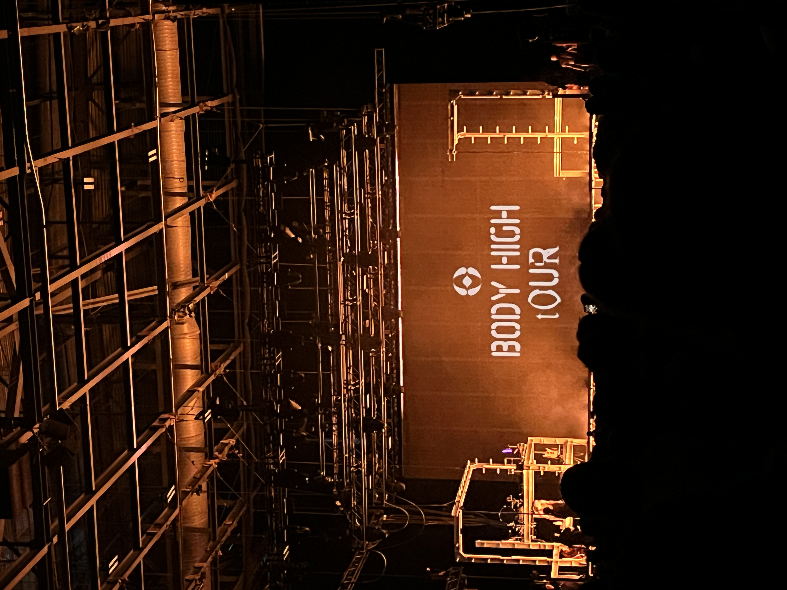

01
Review
Concert
FKA Twigs — Body High Tour
FKA Twigs brought her Body High Tour to Toronto's Coca-Cola Coliseum on March 24, 2026, fresh off the release of her acclaimed sister albums Eusexua (2024) and Afterglow (2025). The show arrived with the added weight of her 2025 North American tour being cancelled due to visa issues, making this concert feel like a long-awaited reckoning for her fans in Toronto.
Read Full Review